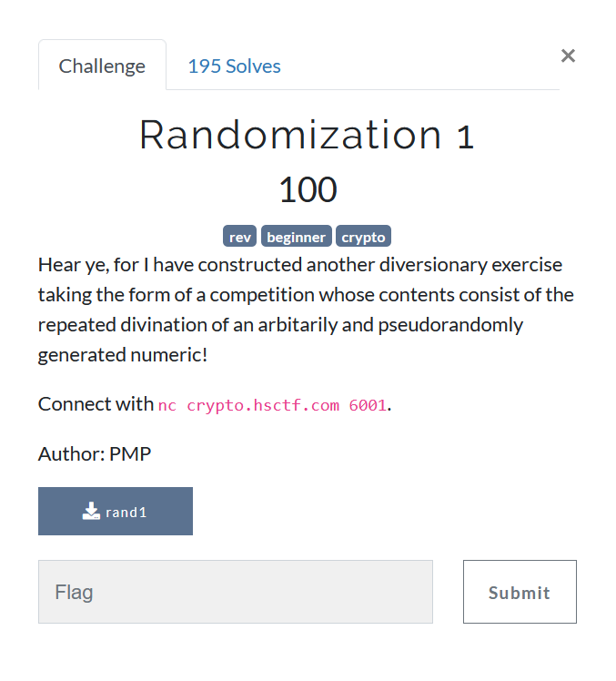

Randomization 1

We are provided a binary rand1 which supposedly runs on the server. We have to figure out how would capture the flag
Lets decompile the binary quickly in Ghidra.
Seeing the output of main function we get
undefined8 main(void)
{
uint uVar1;
undefined8 uVar2;
long in_FS_OFFSET;
int local_1c;
int local_18;
int local_14;
long local_10;
local_10 = *(long *)(in_FS_OFFSET + 0x28);
initRandom();
puts("I heard LCGs were cool so I made my own");
uVar1 = next();
printf("Since I\'m so generous you get a free number: %d\n",(ulong)uVar1);
local_18 = 0; // local_18 works as in iterator from 0 to 9
do {
if (9 < local_18) {
win();
uVar2 = 0;
LAB_0010132e:
if (local_10 != *(long *)(in_FS_OFFSET + 0x28)) {
/* WARNING: Subroutine does not return */
__stack_chk_fail();
}
return uVar2;
}
printf("Guess my number: ");
__isoc99_scanf(&DAT_00102093,&local_1c);
local_14 = next();
if (local_14 != local_1c) {
puts("Wrong!");
uVar2 = 1;
goto LAB_0010132e;
}
local_18 = local_18 + 1;
} while( true );
}
As a quick overview, one could tell there is a loop which runs 10 times and after running 10 times successfully, it should spit out the flag.
It asks for input 10 times, and each time it compares the value with return value of the function next().
Taking a quick look of decompilaton of next
ulong next(void)
{
curr = curr * '%' + 0x41;
return (ulong)curr;
}
We see its a simple linear function, but the decompiled value seems off, it should actually be taking curr which is actually local_14 and returning a char type.
As the start value is printed out before beginning the loop, we can predict all the values by writing a simple function
def next_10(curr):
for i in range(10):
curr = (curr * 0x25 + 0x41)%256
print(curr)
We dont need to bother about automating nc, just input all 10 values in one go as timing is not really an issue
I heard LCGs were cool so I made my own
Since I'm so generous you get a free number: 184
Guess my number: 217
158
23
148
165
26
3
176
177
214Guess my number: Guess my number: Guess my number: Guess my number: Guess my number: Guess my number: Guess my number: Guess my number: Guess my number:
flag{l1n34r_c0n6ru3n714l_63n3r470r_f41lur3_4b3bcd43}
BRAVO we did it